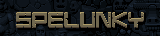

Spelunky Classic 1.1, ported to Rust tick for tick, bugs included.
An unofficial fan port (a mod). Spelunky is Copyright © 2008, 2009 Derek Yu and Mossmouth, LLC.
Play in your browserNeeds a keyboard or a gamepad: arrows move, Z jumps, X whips. Saves stay in your browser.
Desktop
Native builds are on GitHub Releases.
About
Derek Yu's Spelunky Classic (2009), rebuilt from its GameMaker 8 source: the game's own code, transpiled to Rust, running on a reimplementation of the parts of GameMaker it uses. The goal is an exact replica, frame for frame, checked against the original. It runs natively and in the browser (WebGPU, or WebGL2 where that's missing).
Source: github.com/851-labs/spelunky
Credits and license
Spelunky is by Derek Yu, Copyright © 2008, 2009 Derek Yu and Mossmouth, LLC. This port is a modified version of the Spelunky source, made by fans: it isn't official, and isn't affiliated with Mossmouth.
It's distributed under the Spelunky User License v1.1b, and may not be sold.